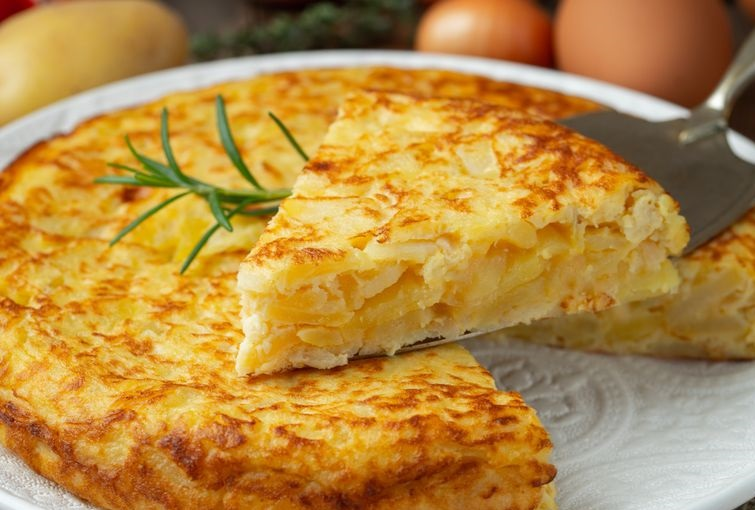
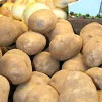
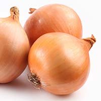
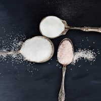
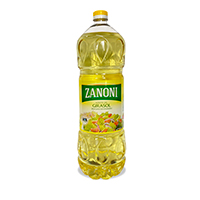

En este programa… Te enseñaremos cómo hacer una auténtica tortilla de
papas española paso a paso, con los mejores tips y trucos para que quede
deliciosa!

La receta de tortilla española es muy popular y conocida por todos,
pero no toda la gente conoce los tips y trucos para que la tortilla de
papas salga perfecta. En el video de hoy vamos a aprender de los mejores
consejos: cómo cortar las papas? Lleva cebolla o no? Cuántos huevos
utilizamos? Cuán cocida debe quedar?
Todas las preguntas anteriores se responden en los gustos de cada uno.
Aquí vamos a aprender a preparar la mejor tortilla del planeta y para
todos los gustos: mas sequita, mas babé, etc. Por ejemplo en Argentina
llamamos tortilla española a la tortilla con cebolla y chorizo colorado,
sin embargo la tortilla española original es la que lleva cebolla,
huevo y papas.
Ingredientes para una tortilla de papas española mediana...
4 Huevos
3 papas medianas
1/2 cebolla
Sal
Aceite




Pasos para hacer una tortilla de papas...
Cortar las papas en rodajas finas, estilo papas españolas.
Colocar abundante aceite en una sartén. Lo que vamos a hacer es poner
la sartén a fuego fuerte, y en cuanto esté tibio el aceite vamos a
agregar todas las papas. Las dejamos cocinar durante 5 minutos.
Mientras tanto vamos a cortar la cebolla en julianas. Una vez pasados
los 5 minutos agregamos las cebollas a la sartén con las papas,
revolviendo suavemente.
Agregamos un poco de sal y vamos a bajar el fuego al mínimo y vamos a
tapar la sartén. Así la dejamos durante 15-20 minutos mientras de vez
en cuando vamos revolviendo suave y procurando que no se pegue.
Una vez que las papas estén cocidas, vamos a proceder a colarlas,
dejándolas en un colador hasta que baje todo el aceite
Colocar los 4 huevos en un bol con un poco de sal y batirlos bien
durante unos minutos.
Agregar las papas con cebollas al bol y volver a batir bien hasta que
esté todo integrado y unido.
Agregamos un chorro de aceite en una sartén dependiendo del estilo de
tortilla que queremos. Colocamos la sartén a fuego fuerte.
Cuando esté bien caliente el aceite, agregamos la mezcla que tenemos en
el bol y movemos la sartén agitándola durante 30 segundos.
Luego de los 30 segundos vamos a poner el fuego bajo y con una
espátula vamos a ir corrigiendo los bordes mientras se va cociendo.
Vamos a cocinar la tortilla española así durante 5 minutos.
Luego vamos a darla vuelta. Para ésto vamos a colocar un plato encima
de la sarten y la damos vuelta sin miedo. Dejamos cocer unos 3-4
minutos más
Para sacarla vamos a volver a darla vuelta. Buen provecho
Cómo hacer tortilla de papas (tortilla española) - Video de YouTube
de Paulina Cocina...
Ubicación de procedencia de la receta...
Video alternativo de como hacer una tortilla de papas - Video descargado
de Youtube de Maxi Cocina...